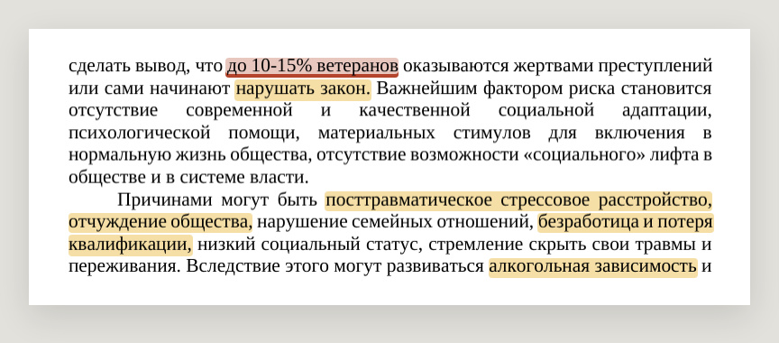
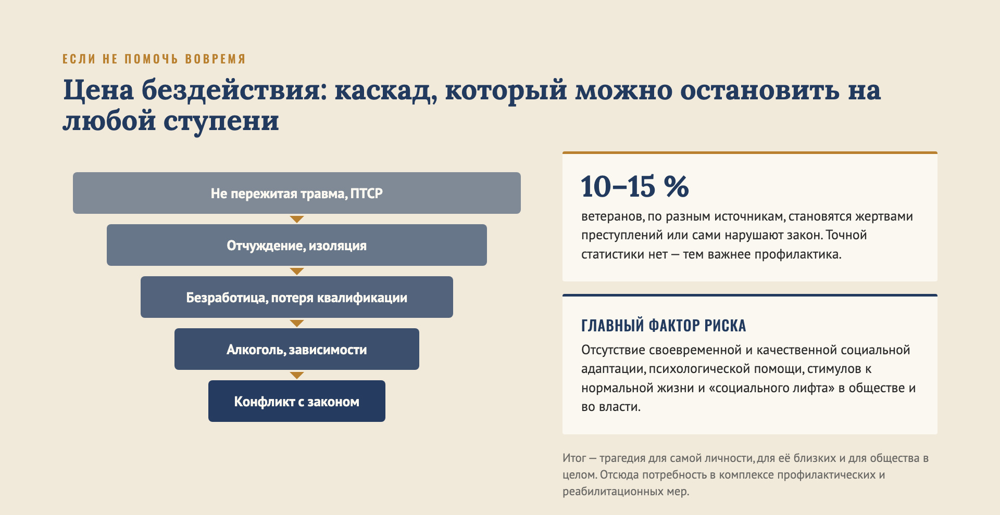
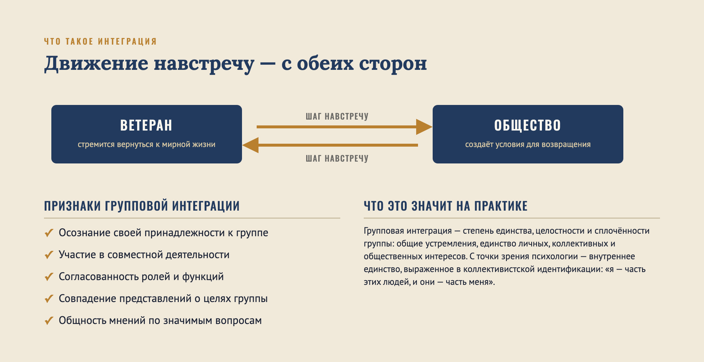

Кейс · презентация психолога
Презентация для психолога к конференции: 17 слайдов из реферата за сутки
Презентация для психолога к выступлению на конференции, когда до доклада сутки, а на руках только реферат. Из 3,5 страницы текста получилось 17 слайдов со схемами и памятка для зала. Сработали две вещи: искать в тексте путь, а не резать его по абзацам, и показать черновик раньше, чем всё готово.


«Я обычно просто рассказываю. Хотелось бы показать. Может, там разложить на блоки в хронологии».
Так написала мне Анна Комарницькая, психолог (гештальт-терапевт) и преподаватель. Через сутки ей выступать на XIV Международном симпозиуме медицинских антропологов в Москве с докладом о том, как ветераны возвращаются домой и в обычную жизнь.
Если вы тоже обычно рассказываете, а показать нечего, этот разбор для вас. Я Алёна Прасолова, собираю презентации к выступлениям для психологов, педагогов и методистов.
Коротко
- Ищите в тексте путь: этапы, историю, порядок помощи. Это каркас.
- Черновик показывайте сразу, недостающее спрашивайте списком.
- Цифры только из вашего текста, с оговорками.
- Людей на фото крупно, памятку залу в руки.
Некогда? Пришлите текст, помощник задаст пару вопросов и назовёт цену.
Попробуйте за 10 секунд
Откройте свой доклад и найдите слова времени: «сначала», «потом», «после», «через год», «сегодня». Нашли три и больше? У вас уже есть лента этапов, то есть первый слайд-схема. В реферате Анны таких лент нашлось три.
Кейс: как шла работа
Что было. Реферат на 3,5 страницы сплошного текста и ни одного слайда.
Что сделали.
- Нашли три пути. Путь человека после возвращения, история групп самопомощи и путь помощи. На них лёг весь доклад.
- Написали сценарий. Какой слайд за каким и какая мысль на каждом. Оформление потом.
- Показали черновик без её данных. Все слайды одной картинкой и вопросы списком: как подписать, сколько минут, откуда цифры, какие фото можно. Анна ответила ночью: «Алёна, вот Вы системно)». По готовому отвечать легче, чем по пустому листу.
- Оставили цифры её. «До 10-15%» встали на слайд вместе с её фразой «точных данных нет» (картинка в начале). Вопрос «откуда это?» уже не страшен.
- Спрятанный список сделали схемой. Признаки групповой интеграции стояли в реферате столбиком под определением. На слайде они стали галочками, а сверху встала главная мысль: человек и общество делают шаг навстречу друг другу.


- Поставили людей крупно. Из 21 фотографии на слайды пошли 9, четыре получили свой слайд «Живое общение вместо лекции». Портрета Анны нет: доклад не про неё.
- Её слова и её контакты. Формулировку для второго слайда, QR-коды и телефон центра поддержки Анна досылала ночью. Всё встало как есть.

- Сделали памятку, о которой не просили. Лист A5 для семей: что нормально в первые месяцы, когда пора к специалисту, куда звонить.
- Отдали в двух цветах. Анна обмолвилась, что такие доклады обычно делают в зелёном. Получила синий и оливковый, каждый в PDF и PowerPoint.
Что получилось. 17 слайдов со схемами и памятка. Успели к докладу.

«Я обратилась к Алёне, и она мне всё сделала. Спасибо большое! Я под таким впечатлением, это просто счастье, словами не передать. У меня завтра конференция, уровень высокий, а у меня один доклад, и получилось так красиво!»
С тех пор Анна вернулась к нам уже пятый раз: за разбором страницы ВКонтакте, текстами, клипами с прогулки и новой презентацией к программе переподготовки. «И презентаций у меня много)».
Что особенного в презентации психолога
- Язык вашего подхода. Коллеги слышат, из какой вы школы. Нейросеть школы смешивает, проверяйте.
- Простые слова для зала. Лента этапов понятнее метафоры. Поймёт ли образ человек без вашего диплома?
- Цифра только с источником. Нет данных, так и напишите.
- Бережно к залу. О тяжёлом предупредите заранее, в конце дайте, куда обратиться.
- Люди только с согласия. Случаи из практики без узнаваемых деталей, фото с разрешения.
Скелет доклада на 15 слайдов
Порядок из этого заказа. Подходит почти к любому докладу психолога на 15-20 минут. Заголовок каждого слайда пишите выводом, а не темой.
- Титул. Тема как мысль, а не рубрика. Имя, организация, мероприятие, дата.
- Почему это важно сейчас. Одно подтверждение: число с источником или фото.
- Путь. Лента этапов: через что проходит человек, семья или группа.
- Трудная точка. Что происходит на самом трудном этапе. Три карточки.
- Почему привычный совет не работает. Две колонки: «как кажется» и «как на самом деле».
- Близкие. Что видят родные и что переживают они сами.
- Если не помочь. Цепочка, где видно, на каком звене можно остановить.
- Что помогает. Колесо направлений вокруг человека.
- Кому помогать. Сам человек, каждый из близких, семья целиком.
- Одна мысль. Тёмный слайд: цитата из проверенного источника или ваш тезис крупно.
- Как это выглядит на практике. Ваш метод: фото и три строки.
- Живые фото. Галерея 2×2 с подписями.
- Дорожная карта. Что нужно, чтобы это заработало.
- Что может сделать каждый завтра. Специалист, семья, общество.
- Главная мысль и куда обратиться. Одна фраза, контакты помощи, QR-код.
7-10 минут? Уберите слайды 5, 9, 10 и 12, линия доклада останется целой.
Педагогу и методисту. Я работаю и с вами. Этот скелет подходит к педсовету, методическому объединению, аттестации и родительскому собранию: вместо человека и семьи встают ученик, класс и родители, вместо направлений помощи ваши приёмы. Отдельного разбора на педагогическом докладе здесь пока нет, этот сделан на докладе психолога.
Скачать скелет доклада на 15 слайдов PowerPoint, 15 слайдов и памятка, как пользоваться. Каждая надпись редактируется, в заметках подсказки. Открывается в Google Slides и Keynote. Без регистрации.
Памятка для зала
Доклад слушают один раз, а лист уносят домой. Памятка нужна, если после выступления люди должны что-то сделать сами: заметить, позвонить, попробовать.
Сторона 1. Что запомнить. Главная мысль одной фразой. Три вещи, которые важно унести. Что можно сделать уже сегодня. Когда пора к специалисту.
Сторона 2. Куда обратиться. Телефоны и адреса, проверенные перед печатью, с датой проверки. При угрозе жизни 112. QR-код на ваши материалы. Ваше имя и как связаться.

Скачать образец памятки A5 PDF, две стороны A5, подсказки на месте вашего текста. Без регистрации.
Скелет есть, а времени собрать нет? Пришлите текст доклада, черновик вы увидите до оплаты.
Какое выступление у вас следующее: конференция, супервизия, педсовет? И что в нём труднее всего показать? Анна тоже начинала с одного сообщения и реферата.
Такую же к вашему выступлению
Пришлите текст доклада в любом виде и фото, если есть. Помощник (ИИ) собирает черновик, а я довожу каждый слайд своими глазами.
от 1 500 ₽
- Презентация до 10 слайдов. Больше слайдов: точную цену бот назовёт до начала работы.
- Памятка A5 на две стороны: 500 ₽.
- Сначала черновик, оплата после него.
- Редактируемый файл PowerPoint в каждом заказе: любую надпись потом поправите сами. И PDF для показа.
Откроется бот-приёмщик в мессенджере MAX: он спросит про выступление и назовёт цену. Удобнее Telegram? Напишите мне туда.
Частые вопросы
Что прислать, чтобы получилось как в кейсе?
Текст доклада в любом виде. Ещё пригодятся: подпись, регламент, источники цифр, фото с согласия людей. Чего-то нет, не страшно: соберу первую версию и спрошу недостающее списком.
Смогу ли я потом поправить слайды сама?
Да. В каждом заказе вы получаете редактируемый файл PowerPoint, где меняется каждая надпись, и PDF для показа.
Тема деликатная. Как вы обращаетесь с материалами?
Текст и фото идут только в вашу презентацию. Работы на сайте показаны с разрешения заказчиков. Случаи из практики помогу обезличить.
Алёна Прасолова. Собираю презентации, памятки и афиши к выступлениям. Помощник (ИИ) делает черновик, каждый слайд я довожу своими глазами.
Ещё разборы
- 3 ошибки, из-за которых слайды трудно читатьАбзац, заголовок-тема и каша в оформлении. Чек-лист перед выступлением.
- Оформление слайдов с текстом: 5 схем вместо абзацаКарточки, лента, колесо, цепочка, таблица.
- Оформление слайдов с фото: 6 раскладокКак поставить снимки целиком и никому не резать голову.
- Сделали презентацию через нейросеть, а вышло скучно: 3 правкиЧто поправить руками после ChatGPT или Claude.